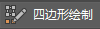

通过重新拓扑可以基于引用曲面的特征生成整洁的新拓扑。使用“四边形绘制”(Quad Draw)工具，可以重新拓扑网格，包括从其他应用程序中导入的三角形网格。
使用四边形绘制工具(Quad Draw Tool)重新拓扑网格
- 设置参考网格：将“四边形绘制”(Quad Draw)工具捕捉到您要重新拓扑的网格。
- 通过执行下列操作之一打开“四边形绘制工具”(Quad Draw Tool)：
- 从“建模工具包”(Modeling Toolkit)窗口的“工具”(Tools)部分中，单击 。
- 从主菜单栏中，选择。
- 从标记菜单中，选择“四边形绘制工具”(Quad Draw Tool)。（若要打开标记菜单，请按 Shift 键并在场景中单击鼠标右键。）
- 放置点：定义顶点。
- 创建多边形：创建四边形并填充三角形的孔。
- 细化多边形：清理新拓扑。
- 完成后，再次单击 以退出工具。
提示： 切换到其他工具后，可以按 Y 键重新激活“四边形绘制工具”(Quad Draw Tool)。